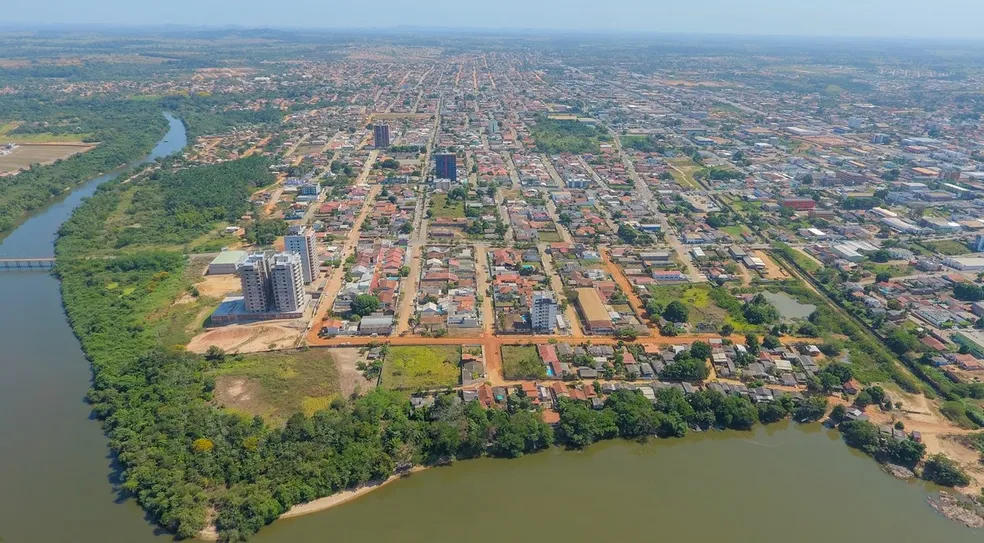

Rondônia é um estado da Região Norte do Brasil, com capital em Porto Velho. Faz fronteira com o Amazonas, Acre, Mato Grosso e a Bolívia. Possui cerca de 1,8 milhão de habitantes. Sua economia é baseada na agropecuária, especialmente na produção de carne e grãos, além da extração de madeira e minérios. Apesar de ter áreas de floresta amazônica, Rondônia sofre com o desmatamento. A população é formada por migrantes de várias regiões do Brasil, o que torna sua cultura bastante diversificada.
 Voltar